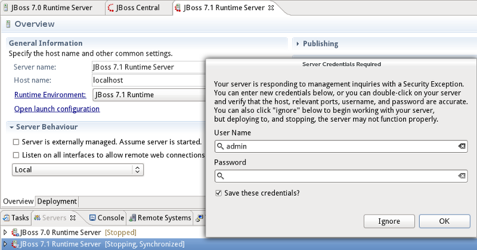
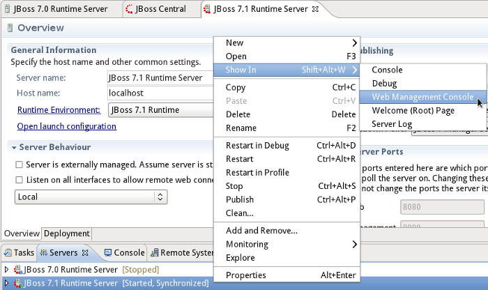
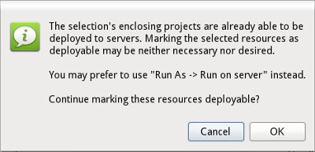

Server |
|
|
Support for AS 7.1 |
JBoss AS Tools now supports JBoss AS 7.1 beta1b. The support includes a new server adapter type. JBoss AS 7.1 also includes new security features restricting access to the remote management services. The new 7.1 adapter includes methods for storing these credentials.  |
|
Run On Server supported for EAR projects |
Attempting to run an EAR project on a server now will load the url that is most likely to be desired, whereas previously no action was taken on EAR projects |
|
Deep-Nested project deployment support |
Nesting deployments several layers deep, such as having a utility jar nested inside another utility project, now functions as expected. |
|
Actions to load AS Management urls |
The most commonly loaded bundled apps for our servers now appear in the server view's context menu. Simply right-click on the server, select "show in", and you will see options such as the JMX Console, Admin Console, and Web Console.  |
|
Usability improvement for "Mark As Deployable" feature |
Some users may have been confusing the "Mark as Deployable" feature with simple deployment done via the Add / Remove Module wizard. When a user now attempts to "Mark as Deployable" a project which is already a deployable module, a dialog is shown, advising them against it unless they are aware of what they are doing.  |